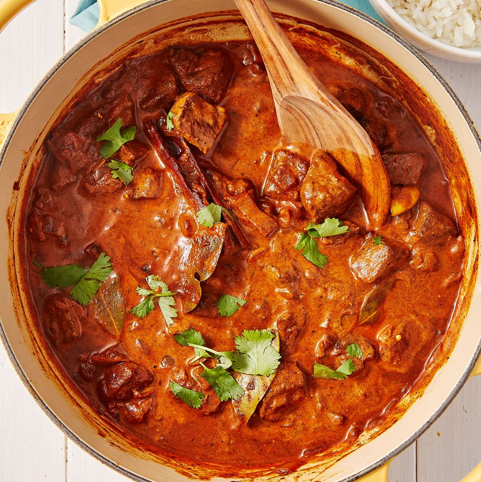

Lamb Curry Recipe

Discription
The image above is of a finished spicey lamb curry
Sering time is approxiamtley 1 hour
This dish has is origins form the northest regions of Pakistan.
It was deelvoped by sher khan of mongolian descent
legen has it that khan was a descendant of the great war lord Ghengis kKhan himself
It is said that the secret to this recipe was the cooking
of it in the helmets of sweaty warriors after a ferocious battle
Ingrediants
- 1/2 tsp. hot chilli powder
- 1 tsp. ground coriander
- 1 tsp. ground cumin
- 1/2 tsp. ground black pepper
- 2 tsp. sweet paprika
- 1 tsp. turmeric
- 2 tsp. garam masala
- 1/2 tsp. ground cardamom
- 3 tbsp. tomato puree
- 2 tbsp. vegetable oil
- 750 g lamb leg, fat trimmed, cut into 2.5cm cubes
- 4 bay leaves
- 1 stick cinnamon
- 4 cloves
- 1 large onion, chopped
- 2 cloves garlic, crushed
- 1 x 5cm piece of ginger, peeled and grated
- 100 ml natural yoghurt
- Small handful fresh coriander, chopped, to serve
Steps
- combine all paste ingredients with a pinch of salt. Set aside.
- Heat oil in a large pan and brown the lamb in batches. Set aside.
- In the same pan, fry the bay, cinnamon, cloves and onion until the onion is soft and translucent.
- Add the garlic and ginger and fry for a further 2mins.
- Add the paste and fry for another 2 mins.
- Add the lamb and 400ml of water and gently simmer for 1 hr, stirring occasionally.
- Discard the bay and cinnamon and stir through the yoghurt, cooking for a further 10 mins.
- Sprinkle with freshly chopped coriander before serving.
Back Home